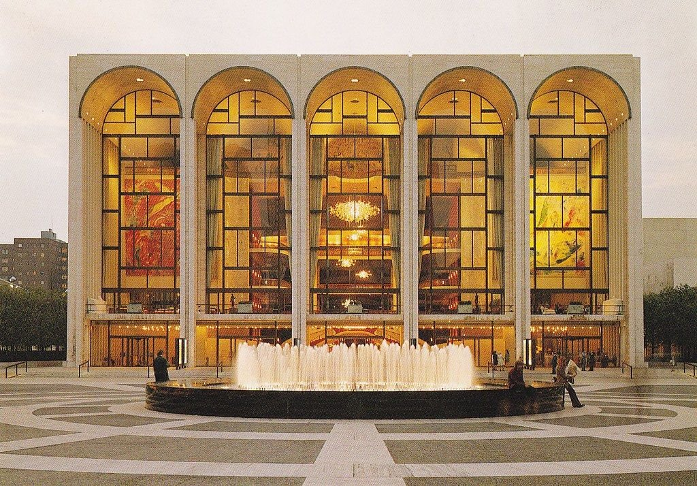

«Метропо́литен-о́пера» — оперная труппа, основанная в Нью-Йорке (США) в 1880 году в качестве альтернативы Музыкальной академии. С 1966 года базируется в Линкольн-центре, в специально построенном для неё здании Метрополитен-оперы (1963—1966, архитектор Уоллес Харрисон).
Является одним из самых известных и престижных оперных театров мира. Нередко сокращенно называется Мет.
Главный дирижёр и музыкальный руководитель театра — Янник Незе-Сеген. Генеральный директор — Питер Гельб.
Создан на средства акционерного общества «Метрополитен-опера хаус компани». Субсидируется богатыми фирмами, частными лицами.
Театр открыт семь месяцев в году — с сентября по апрель. Спектакли идут ежедневно, кроме воскресений. По субботам, как правило, даются два спектакля — дневной и вечерний. С мая по июнь театр выезжает на гастроли. Кроме того, в июле театр дает бесплатные спектакли в парках Нью-Йорка, собирающие огромное количество зрителей.
Оркестр и хор театра работают на постоянной основе; солисты и дирижёры приглашаются по контракту на сезон или на определённые спектакли. Оперы традиционно исполняются на языке оригинала (за исключением спектаклей «для семейного просмотра», которые могут исполняться в переводе на английский язык),
при этом названия опер в афишах и программах указываются на языке исполнения. Все оперы сопровождаются титрами на английском, испанском и немецком языках, а оперы на итальянском языке — также итальянскими титрами. Каждое место в зрительном зале имеет индивидуальный дисплей для воспроизведения титров, находящийся на спинке впередистоящего кресла или на ограждении.
Основу репертуара составляет мировая классика, в том числе и русских композиторов. Помимо опер, в репертуар театра включаются классические оперетты.
